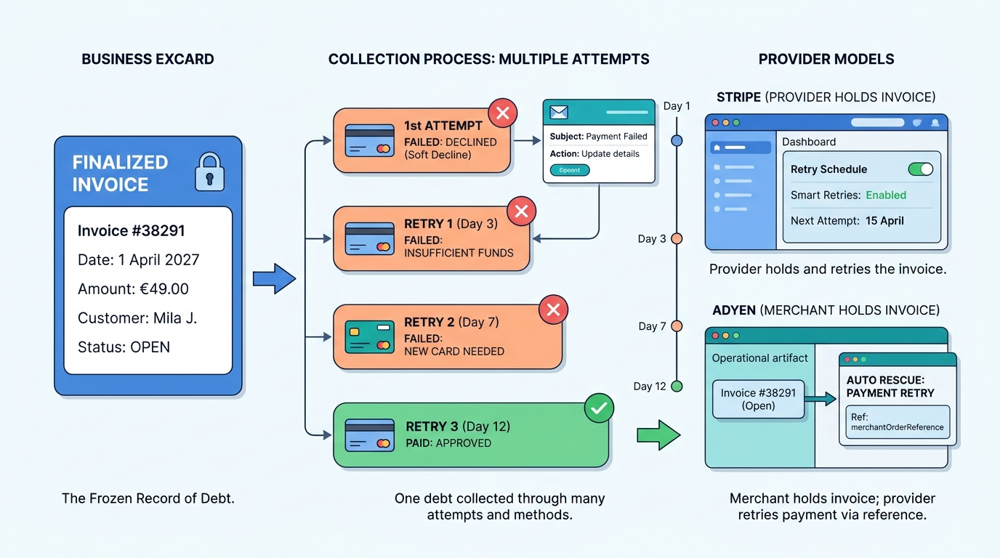

Part VI — REVENUE: Billing, Tax and Recognition
From Invoice to Cash: Invoicing, Collections and Dunning
AI-assisted: researched and written with Claude Code; illustrations generated with Gemini. How this works

Image generated by Google Gemini (gemini-3-pro-image-preview)